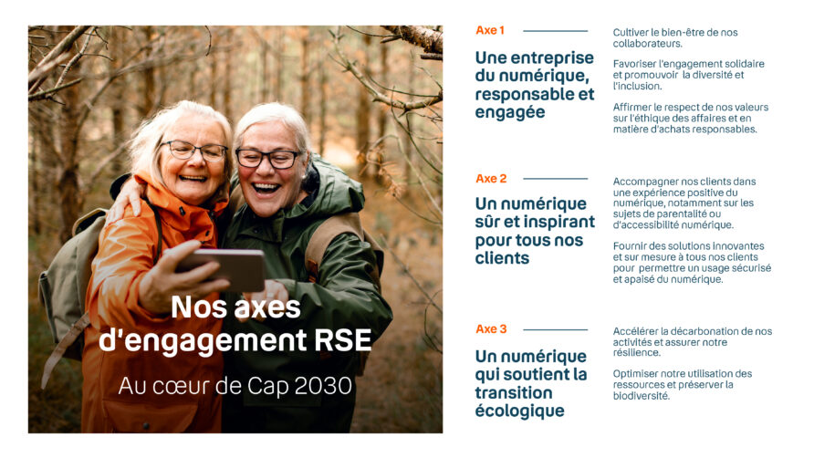

2003
Création de la direction RSE et lancement
de la demarche achats responsable. Suivi de la
signature du Pacte Mondial des Nations Unis.
2004
Mise en place d'un service de
collecte pour le recyclage des mobiles.
2007
Bouygues Telecom devance la loi Grenelle
et intègre les émissions de CO2 indirectes
dans son bilancarbone.
2010
Partenariat avec la Start Up français
"Recommence" pour le réemplois
des téléphones mobiles.
2011
Recommence lance pour Bouygues Telecom
le premier services en ligne de
vente d'appareils reconditionnés.
2012
Partenariat avec "Cordon"
pour le reconditionnement des boxs
fixes. Et obtention de la certification
: "Management de l'énergie" pour leurs
Data Centers.
2015
Sortie du décodeur TV Bbox Miami éco-conçu.
2017
Campagne de sensibilisation sur
le recyclage des smartphones en
coopération avec l'ong "WWF".
2019
Lancement d'un service de réparation
expresse des mobiles en partenariat
avec "Wefix 900".
2020
Annonce de la stratégie pour le
climat aligné avec l'accord de
Paris.
2021
Lancement de l'application de
sensibilisation : "Mon Empreinte
Smartphone. Et passage à l'énergie
renouvelable.
2022
Lancement de forfaits solidaires
et sobres ainsi qu'un nouveau modem
internet certifié : "éco-concept"
qui respect l'objectif de réduction carbone
pour 2027. De plus Bouygues Telecom s'
engage à respecter la Charte Eco Watt.
Dans un contexte où les usages du numérique
ne cessent de croître, leur impact environnemental
est au cœur du débat. Bouygues Telecom a pour
objectif d'assurer à ses clients et à l'ensemble
de ses parties prenantes un service de qualité,
tout en améliorant de façon continue son impact
environnemental.

Afin de répondre à ces enjeux environnementaux, Bouygues
Telecom a défini des objectifs à court terme
qui ont été validés par l'Initiative SBTi. La
Science-based Target Initiative (SBTi) est un
projet majeur dont la mission est de contribuer à la
lutte contre le réchauffement climatique en engageant
concrètement les entreprises.
Objectif 2027 validés SBTi
Par rapport à une référence de 2021
-29.4%
des émissions carbone sur le scope 1(scénario 1.5°C)
-29.4%
des émissions carbone sur le scope 2(scénario 1.5°C)
-17.5%
des émissions carbone sur le scope 3(scénario Well Bellow 2°C)

Afin de faciliter le calcul des gaz à effet de serre issues
de l'activité d'une etreprise,une catégorisation en 3 scopes
existe.
Scope 1: les émissions directes liées à la combistion
de gaz,de fioul(groupes électrogènes),de carburant par la
flotte automobiles de l'entreprise ou encore les fluides
frigorigènes(climatisation)
Scope 2: les émissions indirectes liées à la
consommation déléctricité par l'entreprise
Scope 3: reste des émissions indirectes liées aux
achats de biens et services,aux biens immobilisés,l'amont
de l'énergie:les déplacements de personnes,l'utilisation des
produits vendus et leurs traitement en fin de vie...
Afin d'assurer des installations plus performantes
et moins carbonées, un ensemble de bonnes pratiques
est mis en œuvre pour améliorer l'efficience énergétique.
Ces actions incluent l'intégration d'exigences de développement
durable dès la conception des centres de données et dans
le choix des équipements. De plus, l'entreprise procède à l'
optimisation de l'aménagement des salles techniques
pour mieux gérer les flux d'air et éliminer les points chauds.
Une stratégie clé est le réglage des équipements en fonction
des conditions climatiques externes, notamment l'utilisation
du procédé de "free cooling" (air froid ambiant extérieur
sous 9∘C) pour refroidir les serveurs. Enfin, des solutions de
confinement comme les "cold corridors" permettent d'optimiser
l'efficacité énergétique de la climatisation, en parallèle du
déploiement continu de nouveaux équipements plus performants
.
La démarche d'Achats Responsables de Bouygues Telecom
est globale et vise à référencer des produits et services
plus respectueux de l'environnement, qui sont également
socialement responsables et fabriqués dans le respect des
principes éthiques. Cette approche s'articule autour
de plusieurs axes majeurs : le développement de relations
équilibrées avec les fournisseurs, le recours aux
entreprises du secteur adapté et protégé, et la capacité
à concilier la Responsabilité Sociétale des Entreprises (RSE)
avec les nouvelles opportunités d'achats, tout en maintenant
la rentabilité économique.
Cette politique est soutenue par l'engagement de l'entreprise
envers le Pacte Mondial de l'ONU ainsi que la Charte
Relations Fournisseurs et Achats Responsables et du climat.
Bouygues Telecom s'est engagé dès 2003 à respecter
les principes de responsabilité sociétale du Pacte mondial des
Nations-Unies et à les intégrer à ses processus d'achats. Cet
engagement a été renforcé en 2012 par la signature de la
Charte Relations Fournisseurs et Achats Responsables, et en
2020 par l'adoption d'une stratégie climat et des
objectifs de réduction carbone ambitieux, validés à court
terme par la SBTi.
Dans l'optique de favoriser des usages plus responsables
chez ses clients, Bouygues Telecom s'engage à maintenir
des opérations de reprise et de collecte des mobiles
usagés, ainsi qu'à organiser régulièrement des campagnes
de sensibilisation aux gestes de réemploi et de recyclage
. L'entreprise a déjà mené plusieurs initiatives concrètes, telles
qu'un programme de sensibilisation aux Solutions Smartphones
Durables et une opération nationale organisée en
2018 en partenariat avec des acteurs clés comme WWF
France, Suez, Samsung et ReCommerce Solutions. En 2019
, l'animation intitulée « Vous croyez aux secondes chances
? Nous oui » a été déployée en boutiques, marquée par l'
installation de 900 nouvelles bornes de collecte dans ses
500 magasins.
Bouygues Telecom fait des énergies renouvelables
un choix stratégique majeur. Ce recours à l'électricité
« verte » n'émettant pas de CO2 lors de la
consommation est essentiel pour l'entreprise. En privilégiant
l'éolien et l'hydraulique, dont les émissions liées
à leur fabrication et à leur fin de vie sont les plus
faibles, Bouygues Telecom contribue activement
au développement des énergies renouvelables sur le
territoire français et s'engage concrètement dans la
transition écologique et énergétique. L'objectif
est de s'approvisionner à plus de 50 % en énergie
renouvelable, sachant que l'entreprise couvre
d'ores et déjà 100 % de sa facture d'électricité en énergies
renouvelables jusqu'en 2024.